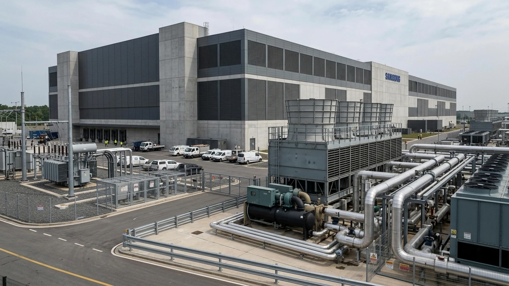

Samsung Wants to Build AI Data Centers, Not Just Supply the Chips
Samsung is assembling a broader data-center business that spans chips, cooling, batteries, construction and operations. Its ambitions could create a new growth engine, but also expose the group to the risks of owning and operating capital-intensive infrastructure.

From components to infrastructure
Samsung Electronics has spent years supplying some of the most important components used in artificial intelligence systems. It now wants a larger role in the infrastructure that connects those components: the data centers where AI models are trained, deployed and operated.
The strategy brings together businesses across the wider Samsung group, including semiconductor manufacturing, construction, information technology services, batteries and industrial systems. The objective is to offer customers more of the infrastructure required to build and operate large computing facilities rather than compete only as a supplier of memory chips.
The Financial Times reported on November 15 that Samsung has been expanding its data-center ambitions through investment, acquisitions and partnerships. The moves include a $1 billion commitment to data-center operator Helix Digital Infrastructure, the acquisition of a European cooling-systems maker and a partnership with OpenAI. Related context: EU Leaders Push AI Sovereignty and Investment to Strengthen Competitiveness Related context: Federal Reserve: AI Becomes Top Financial Stability Risk as Data-Center Debt Rises
The investment in Helix was announced in September, rather than on November 15. The latest development is the broader picture of how Samsung intends to combine its businesses and position itself in the AI infrastructure market.
Samsung SDS, the group's IT services arm, has also been discussing potential data-center tenancy with Anthropic and OpenAI, according to the Financial Times. These discussions should not be confused with signed customer contracts. Neither potential tenant commitment nor the amount of capacity involved has been publicly established in the reporting.
Why data centers are attractive
The commercial opportunity is substantial. AI services require more computing capacity, and that capacity depends on a complex chain of equipment and services. High-performance processors and memory are only part of the requirement. Operators also need power distribution, cooling, backup systems, buildings, networking and reliable day-to-day management.
The Financial Times cited McKinsey estimates that global data-center capacity demand could nearly triple by 2030, with AI accounting for about 70% of the increase. Such projections help explain why companies that already manufacture key components or build industrial facilities are trying to move further into the sector.
Samsung has several potential advantages. Its semiconductor business gives it exposure to the memory and packaging technologies used in AI servers. Its battery operations could supply backup-power systems. Its construction and engineering businesses can contribute to the physical facilities, while Samsung SDS can provide IT integration and operations.
A wider offering could make Samsung more attractive to customers seeking fewer suppliers and more coordinated project delivery. It could also help the group capture revenue at several stages of a data-center project instead of relying on the margins available from selling individual components.
The challenge of coordinating a conglomerate
The group is made up of businesses with different management structures, customers and commercial priorities. A coordinated data-center offer would require them to work together on pricing, project schedules, technical standards and long-term service commitments. The Financial Times noted that Samsung no longer has the centralized coordination structure that once helped the group align its businesses.
There is also a difference between supplying equipment and taking responsibility for an operating facility. A component manufacturer can sell into multiple projects without carrying the full burden of financing, utilization and operating performance. A data-center owner or operator faces longer payback periods, electricity costs, construction delays and the risk that customer demand changes before capacity is fully used.
That distinction matters in a market where large technology companies are already committing substantial sums to infrastructure. If AI demand grows more slowly than expected, newly built facilities could take longer to fill. If demand grows rapidly, operators still need to secure electricity, land, permits and equipment quickly enough to meet customer requirements.
The economics of individual projects will therefore matter more than the headline size of the market. A large pipeline of potential customers does not automatically translate into profitable capacity, and discussions with prospective tenants do not guarantee future revenue.
Where Samsung may have the strongest position
The near-term opportunity may be strongest in areas where Samsung already has manufacturing scale and technical expertise. Memory, advanced packaging, cooling equipment and backup batteries are essential to data-center construction, but supplying them does not require Samsung to assume every risk associated with owning a facility.
The broader strategy may still create value if Samsung can coordinate its businesses more effectively. Large customers increasingly need integrated solutions, and a supplier able to combine equipment, construction and IT services could compete for projects that would otherwise be divided among several contractors.
However, the company will need to demonstrate that its group-wide structure can deliver projects on time and at competitive costs. It will also need to show that new data-center revenue produces attractive returns after accounting for capital expenditure and operating expenses.
What investors should watch
The next evidence will come from signed customer agreements, disclosed capacity, project timelines and the financial contribution of Samsung's data-center activities. Revenue forecasts are useful indicators of ambition, but they are not a substitute for completed projects and recurring operating income.
Investors should also distinguish between Samsung's established semiconductor sales and the newer infrastructure business. Strong demand for memory does not necessarily prove that operating data centers will be equally profitable.
The company's opportunity is not simply to sell more equipment. It is to prove that a conglomerate with businesses spanning chips, batteries, construction and IT can operate as a coordinated infrastructure provider.
This article is for informational purposes only and is not investment advice.